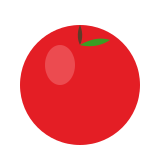

Have you seen those viral videos claiming baking soda removes pesticides from fruits? But is it actually true? Test different cleaning methods below to see how effectively they remove pesticides from fruits, based on real scientific research.

Water alone removed 20% of pesticides from the apple.
20% Pesticide Removed
According to research published in the journal Foods, different washing methods show varying effectiveness in removing pesticides like thiabendazole from fruit surfaces. The study used Surface-Enhanced Raman Spectroscopy (SERS) and liquid chromatography-mass spectrometry (LC-MS/MS) to measure pesticide removal.
Their findings showed that a sequential cleaning method using both corn starch and baking soda was most effective. This interactive demonstration simplifies the study's findings to help visualize how different washing techniques perform.
Explanation goes here.